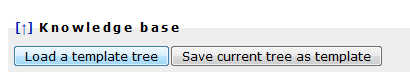
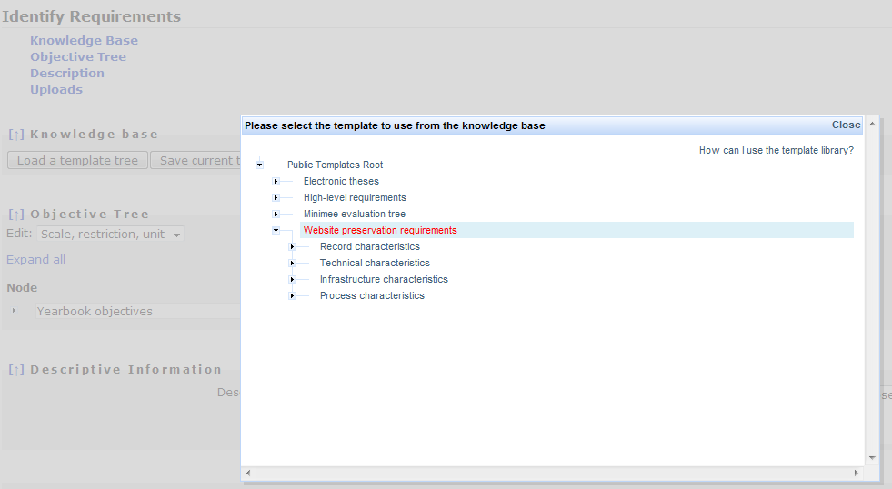
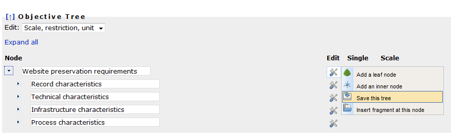
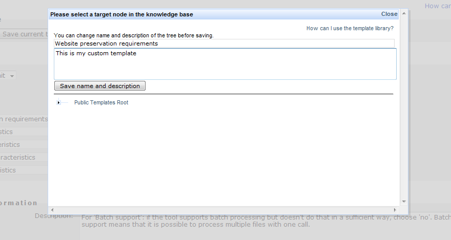
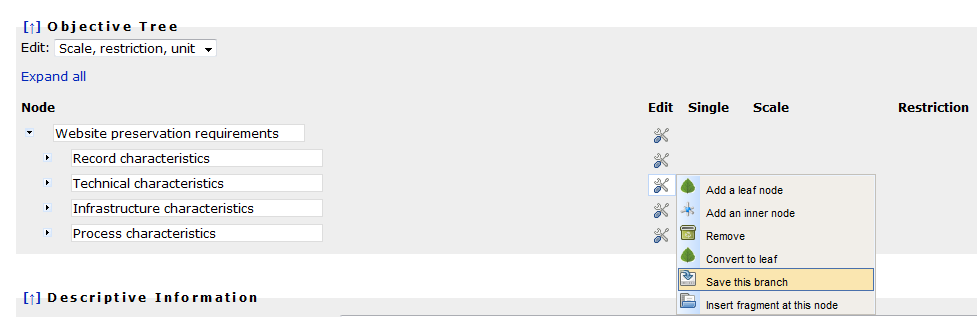
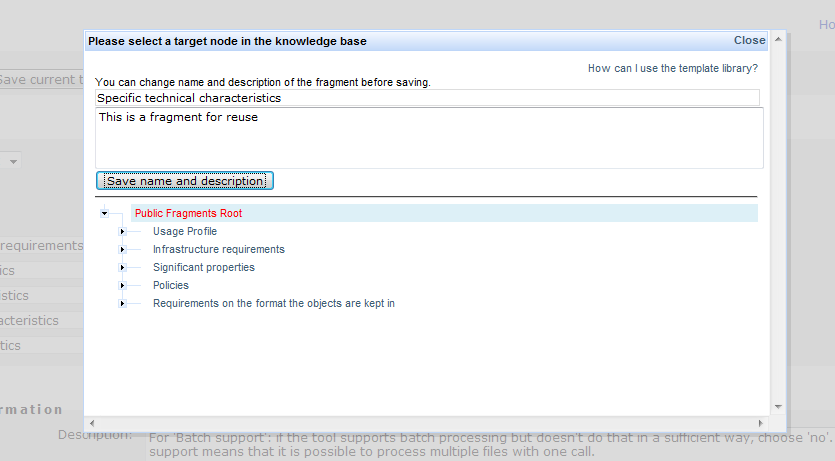
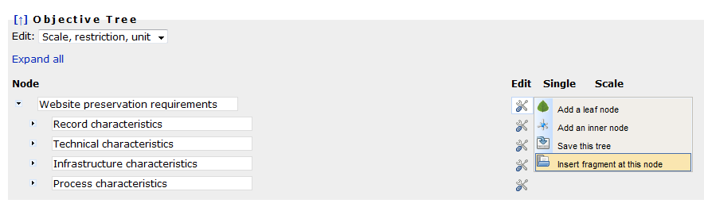
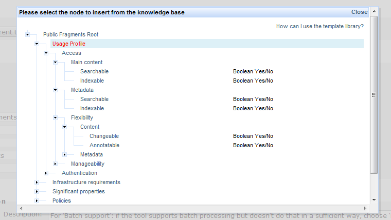

This page explains the functionality provided by the template- and fragment-trees in Plato.
To allow you the full or partial reuse of an objective tree which
you have already defined within a former project, or simply
to assist you in creating a nicely structured objective tree
from scratch, Plato includes a knowledge base that holds useful templates and fragments of requirements.
You can save your trees (or parts of your trees, so-called fragments) in the library, and load templates or fragments from it.
- Templates should be used to store complete objective trees, be it from former case studies or just rough tree-layouts which you might want to re-use for other projects. When selecting a template, your project's current objective tree will be replaced by the template, which you can then customize to your needs.
- Fragments on the other hand can be used to store and organize snapshots of parts of an objective tree for partial reuse. They can be to added to any inner node in your project's objective tree.
If you want to start building your objective tree by using one of the templates provided in the template library, simply click the corresponding button:
The knowledge base interface will open (it might take a second).
You select the template you want to use by clicking on its name. Please allow a few moments for this operation. The popup will disappear and your current objective tree will be replaced by a copy of the selected template. Now you can start customizing it to your needs.
To save an objective tree into the knowledge base, open the edit menu next to the root node and select "Save this tree". A copy of the tree will then be stored into the library.
You can change its name and description of the tree before saving, as shown below:
To complete the operation and store the tree, select the target node in the library to which you want to add the tree. The popup window will close, and a copy of your tree is stored in the public library and accessible to all users.
To save a node and its children to the template library, open the edit menu next to it and select "Save this branch":
As with the templates, you can edit its name and description:
To complete the operation and store the branch, select the target node in the library to which you want to add the fragment. A copy of the node, including its child-nodes and leaves as well as their scales and restrictions, is now stored in the library.
If you want to insert a fragment from the template library into your objective tree, open the edit menu next to the node where you want to insert the fragment, and select "Insert fragment at this node". (Insertion operations are only possible at inner nodes, not at leaves.)
The library popup will appear, asking you to select a fragment for insertion:
Again, to complete the operation and store the branch, select the fragment to insert and allow a few moments for the operation. The popup will close and the fragment will be inserted at the chosen location.